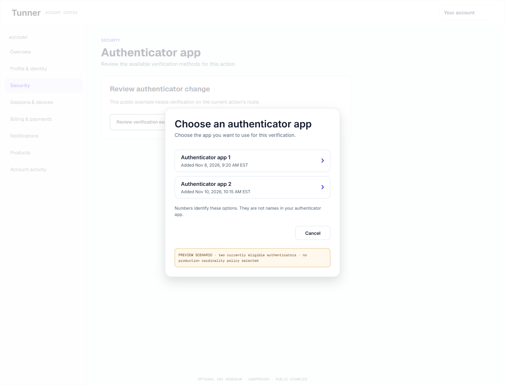
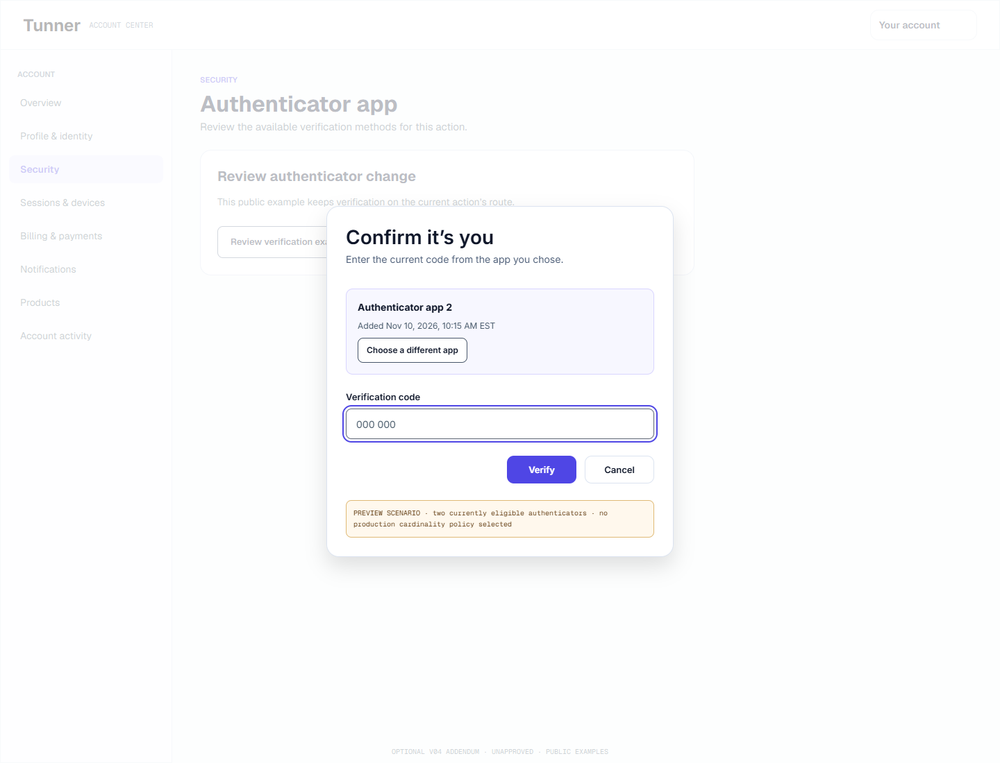
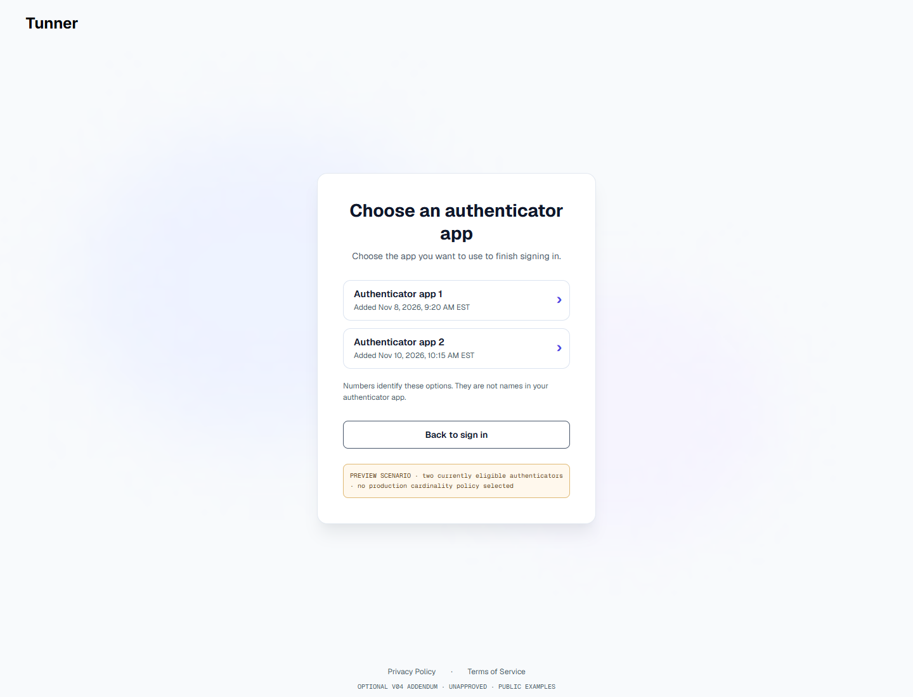
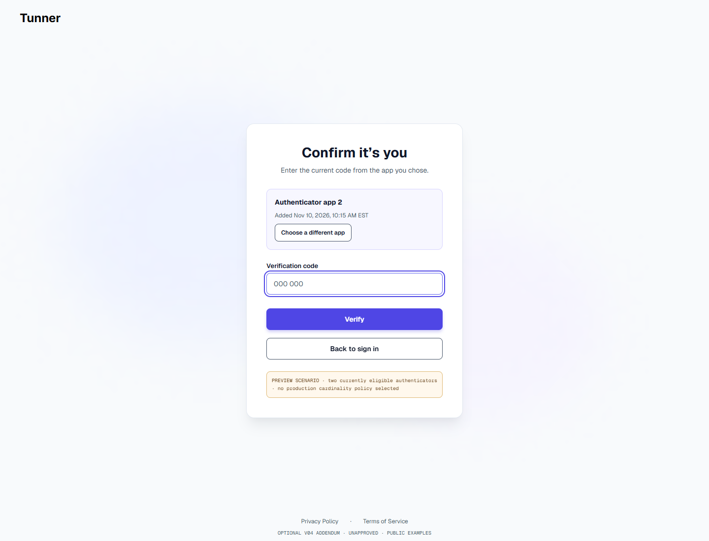
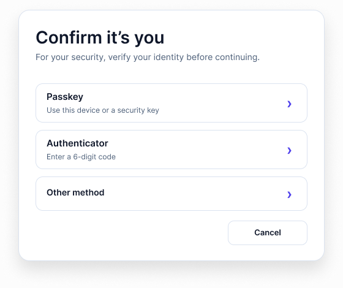

Optional V04 addendum: choose an authenticator app
Unapproved optional proposal. Separate from the approved 008-V01–V05 packet. Two eligible factors are a public preview scenario; no production cardinality or persisted nickname is selected. Initial picker has no choice. Selected pictures follow an explicit click.
Exact optional scope and metadata projectionLayout / Axe / keyboardMeasured contrastHashes and baseline check
12 pictures · 12 Axe cases, 0 violations · 26 incomplete automated nodes retained · original 118 packet hashes unchanged.












Actual approved chooser reference
Platform UX98:28 and row98:35, read-only live confirmation. Existing500px shared dialog and444×64 desktop button row; content-fitting detail and mobile wrapping are proposed adaptations.

Root/Product review is required for this optional picker before production implementation. Existing single-factor pictures and their five-scope approval remain unchanged.